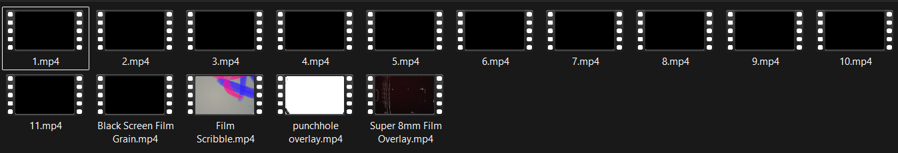

Film Effects
This asset contains 11 film effect transitions that are easy to use in your projects — perfect for creating eye-catching Instagram reels or YouTube Shorts with animated flair and cinematic transitions.

Download Film EffectsThis asset contains 11 film effect transitions that are easy to use in your projects — perfect for creating eye-catching Instagram reels or YouTube Shorts with animated flair and cinematic transitions.

Download Film Effects